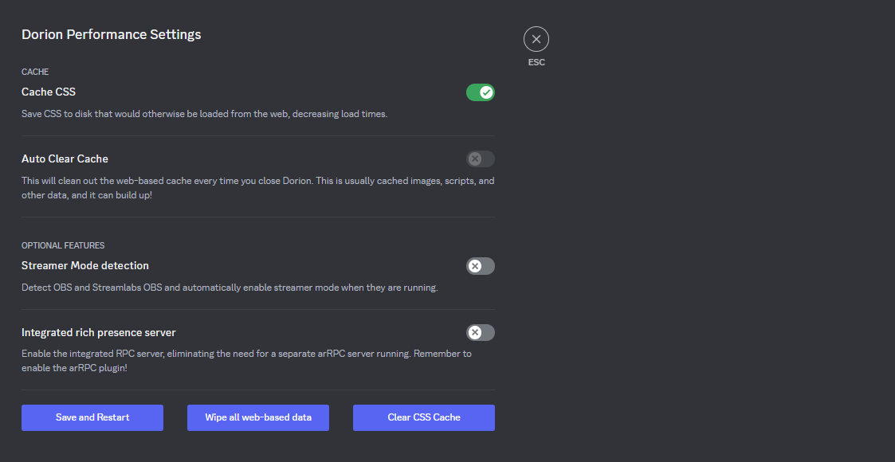

Built with Rust on top of the Tauri library, Dorion uses your systems integrated
Webview implementation. This means Dorion has a tiny installation size (~18mb) and can even work portably.
Linux uses WebkitGTK, and MacOS uses WKWebview.

Dorion is built with "choice-of-performance" in mind. Want to auto-clear your cache when closing Dorion to preserve disk space? You can! Want to cache
your theme's CSS, making it snappier to load? You can do that too!